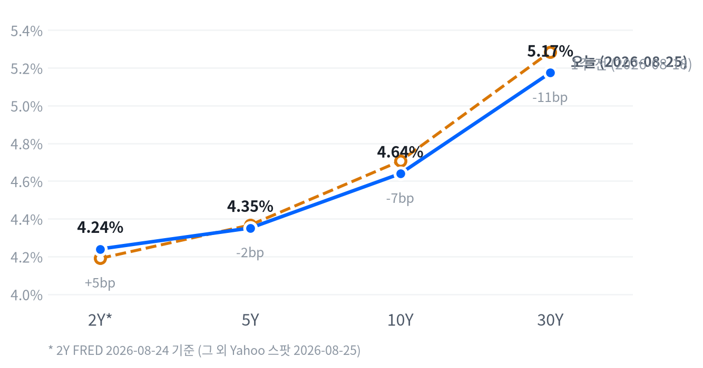

8/25(화) 뉴욕증시는 3대 지수가 나란히 올랐습니다. 나스닥은 +0.66%, S&P500은 +0.32%로 사상 최고치에 바짝 다가섰고 다우도 +0.30% 상승했습니다.
유가가 이란 긴장 완화 신호에 급락(WTI -4.59%, 브렌트 -6.85%)하면서 국채금리가 이틀째 내렸고, 금은 4,716달러로 사상 최고치를 새로 썼습니다. 2~6주 스탠스는 새로 열린 트리거가 없어 전 자산군을 그대로 유지합니다.
오늘의 행동. 2~6주 시계에서는 유지가 오늘의 결론입니다. 어제 걸어둔 트리거 중 오늘 새로 충족된 것이 없어 전 자산군 포지션을 그대로 가져갑니다.
지금 이 판단을 유지하는 이유는 이렇습니다. 금은 이미 20일 수익률 16.84%로 지난 세션에 비중확대까지 올려둔 상태고, 오늘도 사상 최고치를 새로 썼습니다. WTI는 5일 수익률 -4.51%로 확대·축소 트리거 사이 중립권에 머뭅니다.
무효화 조건. 금은 5일 수익률이 -4% 밑으로 꺾이면 비중을 되돌리고, 채권은 30년물이 5.05%를 하회해야 듀레이션 확대를 검토합니다.
| 지수 | 종가 | 등락 | 등락률 |
|---|---|---|---|
| S&P 500 Growth | 138.80 | +0.92 | +0.67% |
| Nasdaq | 26,151.30 | +171.11 | +0.66% |
| Russell 2000 | 3,010.02 | +14.94 | +0.50% |
| S&P 500 | 7,677.28 | +24.42 | +0.32% |
| Dow | 53,577.40 | +160.24 | +0.30% |
| S&P 500 Value | 237.45 | -0.31 | -0.13% |
| 섹터 | 등락률 |
|---|---|
| Technology | +0.94% |
| Communication Services | +0.77% |
| Health Care | +0.34% |
| Utilities | +0.21% |
| Financials | +0.15% |
| Real Estate | +0.07% |
| Materials | +0.00% |
| Consumer Discretionary | -0.30% |
| Industrials | -0.34% |
| Consumer Staples | -1.06% |
| Energy | -1.66% |
나스닥은 개장(09:30 ET) 직후 당일 고점을 찍은 뒤 10:30 ET에 시가 대비 -0.45%까지 저점을 낮췄습니다. 이후 나스닥은 오후 내내 낙폭을 되돌려 강보합으로 마감했습니다.
S&P500과 러셀2000도 비슷한 궤적을 그렸습니다. 두 지수는 09:30 ET에 각각 +0.12%, +0.24%로 고점을 찍은 뒤 10:30 ET에는 각각 -0.34%, -0.14%까지 밀렸습니다. 이후 두 지수 모두 오후 내내 낙폭을 되돌려 강보합으로 마감했습니다.
엔비디아는 14:00 ET에 시가 대비 -1.21%까지 밀렸다가 개장 직후 고점 수준을 되찾으며 종가 기준 +2.19% 올랐습니다. 수요일(8/26) 실적 발표를 앞두고 저가 매수세가 유입된 것으로 보입니다.
이날 상승은 기술(+0.94%)·통신서비스(+0.77%) 등 반도체·메모리 관련 섹터가 이끌었고, 유가 급락 직격탄을 맞은 에너지(-1.66%)와 필수소비재(-1.06%)가 지수를 짓눌렀습니다. 성장주 지수(+0.67%)가 가치주 지수(-0.13%)를 앞선 점도 위험선호가 살아났음을 보여줍니다.
국채금리가 내리고 유가 급락으로 인플레이션 우려가 누그러진 점이 오늘 반등의 공통 배경입니다. 반도체·메모리주는 수요일 엔비디아 실적을 앞두고 저가 매수가 몰렸지만, 에너지·필수소비재 같은 경기 방어색이 짙은 섹터는 상대적으로 부진했습니다.
| 만기 | 종가(2026-08-25) | 전일比(bp) | 1주 전 | 주간 변화(bp) |
|---|---|---|---|---|
| 2Y* | 4.24% | +0.0bp | 4.19% (8/17) | +5.0bp |
| 5Y | 4.351% | -5.7bp | 4.367% (8/18) | -1.6bp |
| 10Y | 4.639% | -6.5bp | 4.706% (8/18) | -6.7bp |
| 30Y | 5.174% | -5.7bp | 5.285% (8/18) | -11.1bp |

차트의 2Y*는 FRED 2026-08-24 기준(1영업일 지연), 나머지 만기는 Yahoo 스팟 2026-08-25 기준으로 표기 기준일이 다르다는 점을 감안해서 볼 것.
2s10s 스프레드는 39.9bp입니다(2Y는 FRED 8/24, 10Y는 Yahoo 8/25 기준이 섞인 값). 두 다리 날짜를 맞춘 FRED 동일자(8/24) 기준으로는 46.0bp로 6.1bp 더 높습니다.
이 차이는 날짜 불일치가 스프레드를 다소 좁혀 보이게 만든 정도로, 당일 커브 형태를 논할 때는 두 다리 모두 Yahoo 8/25 동일자인 5s30s 스프레드 82.3bp를 기준으로 삼습니다.
오늘 하루로 보면 5년물과 30년물이 각각 -5.7bp로 같은 폭 내렸고, 10년물(벨리)은 -6.5bp로 더 크게 내려 5s30s 스프레드는 사실상 변화가 없었습니다.
주간으로는 5년물이 -1.6bp에 그친 반면 30년물은 -11.1bp까지 밀려, 5s30s 스프레드가 한 주 동안 9.5bp 좁혀지는 완만한 불 플래트닝이 나타났습니다.
2Y는 FRED 기준 1주 전(8/17) 대비 +5.0bp로 반대 방향을 가리키지만, 관측 구간 자체가 다른 만큼 단기물이 이번 플래트닝에 실제로 가담했는지는 단정하지 않습니다. 차트의 2Y*는 이 기준일 불일치를 나타낸 표기입니다.
FRED 동일자(8/24) 기준으로 10년물 명목금리는 하루 동안 -4bp 움직였는데, 이 중 -2bp는 실질금리, 나머지 -2bp는 기대인플레에서 나와 둘이 동반 하락했습니다.
5년물도 같은 날 명목 -2bp가 전부 기대인플레(-2bp)에서 나왔고 실질금리는 변화가 없었습니다.
주간 기준(FRED, 8/17→8/24)으로는 구성이 엇갈립니다. 10년물 명목 -2bp는 실질금리가 -6bp 내린 가운데 기대인플레가 +4bp 올라 하락폭 일부를 되돌렸습니다. 5년물도 명목 +3bp 중 실질금리 -4bp·기대인플레 +7bp로 같은 구도를 보였습니다.
10년 기간프리미엄(2026-08-21 기준)은 하루 +2.0bp, 주간 +2.9bp로 확대돼, 실질금리 하락과 별개로 국채 수급·불확실성 프리미엄이 얹히고 있다는 정황을 보탭니다.
장기 인플레이션 기대의 앵커를 보여주는 5년 후 5년 기대인플레(2026-08-25 기준)는 2.33%로, 하루 +1bp·주간으로는 변화가 없어 앵커가 안정적입니다.
하이일드 스프레드는 2.69%(8/24 기준)로 하루 -1bp 좁혀졌고, 투자등급 스프레드도 0.81%로 보합을 유지해 신용시장은 오늘 유가 급락에 스트레스 신호를 보내지 않았습니다.
금리가 내린 배경으로는 유가 급락으로 인플레이션 기대가 낮아진 점과, 지난주 후반 흔들렸던 재무부 바이백 프로그램 불확실성이 일부 해소된 점이 꼽힙니다.
채권 포지션은 숏 바이어스·벨리 중심 보유를 유지합니다. 30년물이 5.174%로 여전히 높은 구간에 머물러 있어, 장기물 비중을 늘리려면 5.05% 하회를 먼저 확인해야 합니다.
| 페어 | 종가 | 등락 | 등락률 |
|---|---|---|---|
| DXY | 98.89 | -0.11 | -0.11% |
| USD/KRW | 1,381.94 | -3.04 | -0.22% |
| USD/JPY | 159.19 | +0.29 | +0.18% |
| EUR/USD | 1.1678 | -0.0003 | -0.03% |
엔/달러는 자정(00:00 ET) 159.05엔으로 저점을 찍은 뒤 아시아 시간대에 매수세가 유입되며 오전 9시 159.49엔까지 고점을 높였습니다. 이후 엔/달러는 되돌림을 거쳐 159.19엔으로 마감했습니다.
DXY는 오늘 -0.11% 내리며 최근 한 달간 이어진 -2.45%의 완만한 약세 흐름을 유지했습니다. 원화는 달러 대비 -0.22% 더 강해 최근 추세를 그대로 이어갔습니다.
FX 스탠스는 달러 소폭 숏을 그대로 유지합니다. DXY 20일 수익률이 -2.45%로 아직 확대 트리거(-3.0%)를 밑돌지 않았습니다.
| 원자재 | 종가 | 등락 | 등락률 |
|---|---|---|---|
| WTI | 81.11 | -3.90 | -4.59% |
| Brent | 85.86 | -6.31 | -6.85% |
| Natural Gas | 2.85 | +0.06 | +2.26% |
| Gold | 4,715.90 | +75.10 | +1.62% |
WTI는 자정(00:00 ET) 85.49달러로 이날 고점을 찍은 뒤 하루 내내 미끄러져 마감 직전 오후 4시 80.23달러까지 저점을 낮췄습니다. 이란 리스크 완화 소식이 전해지며 낙폭이 시가 대비 -6.10%까지 확대됐습니다.
브렌트도 함께 급락하며 -6.85%로 오늘 상품 중 낙폭이 가장 컸습니다. 파키스탄군 참모총장의 테헤란 방문 등 중재 외교와 예상보다 약했던 미국의 대이란 제재가 하락 촉매로 꼽힙니다.
금은 개장 직후인 09:30 ET에 4,660달러로 저점을 찍은 뒤 꾸준히 올라 마감 직전 4,726달러까지 고점을 높였습니다. 종가는 4,716달러로 사상 최고치를 새로 썼습니다.
유가 급락은 이란 리스크 완화라는 이벤트성 재료로 판단해 원자재·에너지 스탠스는 중립을 유지합니다. 금은 이미 지난 세션에 비중확대로 올려둔 뒤라 오늘 사상 최고치 경신은 그 판단을 재확인하는 신호입니다.
국면은 오늘도 교착에 머뭅니다. 오늘 신규주택판매(7월, 60.7만 채)가 새로 나왔지만 성장축 점수는 -0.2로 어느 쪽으로도 뚜렷하게 기울지 않는 수준이라 국면을 옮기지 못했습니다. 인플레축도 -0.264로 같은 완만한 디스인플레이션권에 머물러, 이 국면이 이어진 지는 이레째입니다.
성장 쪽은 고용이 개선인 반면 소비가 뚜렷하게 꺾이면서 성장축 전체가 방향을 잃었습니다. 오늘 나온 신규주택판매는 전월보다 줄었지만 판정은 보합에 그쳐, 생산·활동축 내부에서도 지표들이 엇갈렸습니다. 물가 쪽은 CPI·PPI의 완만한 둔화와 미시간대 기대인플레의 재가속이 뒤섞여, 순합산으로는 완만한 디스인플레이션 그 이상도 이하도 아닙니다.
오늘 판정은 새 지표가 축 점수를 실제로 밀어야만 국면이 넘어간다는 원칙 위에 서 있습니다. 오늘 발표는 그 문턱을 넘지 못해, 국면도 정책 경로도 어제 판단을 그대로 승계합니다.
고용은 개선 쪽인데, 일곱 지표 중 다섯이 좋아지는 방향입니다. 실업률이 4.2%에서 4.1%로 낮아졌고, 신규 실업수당 청구(주간)도 21.2만 건에서 20.6만 건으로 줄었습니다. 반대로 4주 평균은 19.98만 건에서 20.4만 건으로 늘었고, 비농업 고용은 +2만 명에서 -2.3만 명으로 돌아섰으며, 시간당 임금 증가 속도도 0.29%에서 0.05%로 둔화됐습니다. 고용축 +0.398
| 지표 | Actual | Forecast | Previous | 발표일 | 판정 |
|---|---|---|---|---|---|
| 신규 실업수당 청구(주간) | 206K | — | 212K | 2026-08-15 주 | |
| 신규 청구 4주 평균 | 204K | — | 199.75K | 2026-08-15 주 | |
| 계속 실업수당 청구 | 1,799K | — | 1,781K | 2026-08-08 주 | |
| JOLTS 구인건수 | 7,359K | — | 7,537K | 2026-06(기준월) | |
| 비농업 고용(증감) | -23K | — | +20K | 2026-07(기준월) | |
| 실업률 | 4.1% | — | 4.2% | 2026-07(기준월) | |
| 평균 시간당임금 MoM | +0.05% | — | +0.29% | 2026-07(기준월) |
생산·활동은 보합인데, 다섯 지표 중 둘만 개선 방향이고 나머지는 반대거나 그대로입니다. 기존주택 판매는 406만 건으로 완만하게 개선됐고, 내구재 주문도 +0.47%로 전월(-4.00%)에서 반등해 개선 쪽에 무게를 보탰습니다. 산업생산은 전월비 +0.20%로 플러스는 유지했지만 전월(+0.27%)보다 증가폭이 줄어 완만하게 후퇴했네요. 오늘 새로 나온 신규주택판매는 60.7만 채로 전월(67.8만 채)보다 줄었지만 판정으로는 보합에 그쳐, 이 축 전체를 어느 쪽으로도 강하게 밀지 못했습니다. 생산·활동축 +0.169
| 지표 | Actual | Forecast | Previous | 발표일 | 판정 |
|---|---|---|---|---|---|
| 산업생산 MoM | +0.20% | — | +0.27% | 2026-07(기준월) | |
| 내구재 수주 MoM | +0.47% | — | -4.00% | 2026-06(기준월) | |
| 신규주택판매 | 607K | 630K | 678K | 2026-08-25 | 하회▼ |
| 기존주택판매 | 4.06M | — | 4.13M | 2026-07(기준월) | |
| 실질GDP 성장률 QoQ(연율) | +1.5% | — | +2.1% | 2026-Q2(기준월 2026-04) |
7월 신규 단독주택 판매는 계절조정연율 607,000채로, 상향수정된 전월 678,000채보다 -10.5% 줄었고 컨센서스 630,000채도 밑돌았습니다. 다만 이 하락폭은 90% 신뢰구간에 0이 포함돼 통계적으로 유의하지 않다고 발표문 스스로 밝히고 있습니다.
센서스국(Census) 원문에 따르면 7월 말 판매대기 재고는 488,000채로 전월 479,000채보다 1.9% 늘어 통계적으로도 유의미했습니다. 그 결과 월판매 대비 공급개월수는 8.5개월에서 9.6개월로 늘어, 재고가 소진되는 속도가 느려지고 있다는 신호를 냈습니다.
가격은 엇갈렸습니다 — 중간가격은 393,800달러로 전월보다 2.3% 내린 반면 평균가격은 508,800달러로 4.1% 올라, 고가 주택 비중이 늘었을 가능성을 보여줍니다.
지역별로는 중서부가 -42.7%나 급감하며 헤드라인 하락을 주도했고 이 수치는 통계적으로도 유의했습니다. 반면 서부는 +6.2%, 남부는 -13.0%, 북동부는 +30.3%로 나타났지만 표본 변동폭이 커 방향성을 단정하기 어렵습니다.
착공 단계별로는 완공 재고 판매가 343,000채로 전월 391,000채보다 줄어, 완공 재고 소진도 함께 둔화됐습니다.
헤드라인 하락 자체는 통계적으로 유의하지 않지만, 재고 증가와 공급개월수 확대는 유의미한 추세로 고금리 국면에서 신규주택 수요가 공급을 따라가지 못하고 있음을 보여줍니다. 국채금리가 이틀째 내린 배경 중 하나로 꼽히는 주거비 디스인플레이션 기대와도 같은 방향이며, 성장축 점수가 -0.2까지만 소폭 낮아진 것도 이번 발표의 통계적 비유의성 때문입니다.
소비는 뚜렷하게 악화됐습니다. 두 지표 모두 나빠지는 방향이라 소비축이 네 축 중 가장 크게 꺾였습니다. 소매판매는 7월 전월비 -0.58%로 6월 +0.25%에서 감소로 전환했고, 미시간대 소비자심리지수는 49.5로 숫자로는 전월(44.8)보다 올랐지만 최근 추세 판정으로는 여전히 악화권에서 벗어나지 못했습니다. 소비축 -1.168
| 지표 | Actual | Forecast | Previous | 발표일 | 판정 |
|---|---|---|---|---|---|
| 소매판매 MoM | -0.58% | — | +0.25% | 2026-07(기준월) | |
| 미시간대 소비자심리지수 | 49.5 | — | 44.8 | 2026-06(기준월) |
물가는 둔화 쪽이지만 폭은 크지 않은데, 여덟 지표 중 셋만 뚜렷하게 둔화 방향을 가리켜 절대다수는 아직 재가속이나 교착에 머뭅니다. 소비자물가는 전월비 +0.07%로 낮은 수준을 유지했고, 생산자물가도 전월비 -0.03%로 두 달 연속 마이너스를 이어가며 둔화 판정을 받았습니다. 미시간대 1년 기대인플레는 4.6%로 숫자상 전월(4.8%)보다 낮아졌음에도 추세 판정에서는 재가속으로 분류돼, CPI·PPI의 완만한 둔화와 기대인플레의 재가속이 물가축 안에서 정면으로 엇갈립니다. 물가축 -0.264
| 지표 | Actual | Forecast | Previous | 발표일 | 판정 |
|---|---|---|---|---|---|
| CPI YoY | 3.54% | — | 3.73% | 2026-07(기준월) | |
| CPI MoM | 0.07% | — | -0.42% | 2026-07(기준월) | |
| 근원 CPI YoY | 2.79% | — | 2.81% | 2026-07(기준월) | |
| 근원 CPI MoM | 0.22% | — | -0.02% | 2026-07(기준월) | |
| PPI 최종수요 MoM | -0.03% | — | -0.11% | 2026-07(기준월) | |
| PCE 물가지수 YoY | 3.67% | — | 4.08% | 2026-06(기준월) | |
| 근원 PCE YoY | 3.29% | — | 3.42% | 2026-06(기준월) | |
| 미시간대 1년 기대인플레 | 4.6% | — | 4.8% | 2026-06(기준월) |
연준은 다음 회의(9월 16일 FOMC)에서 금리를 동결하고, 인하 재개는 4분기 이후로 미룰 가능성이 가장 유력한 경로로 유지됩니다. CME FedWatch 기준 동결 확률은 68.4%로 어제와 같은 수준입니다 — 오늘 나온 신규주택판매는 이 확률을 움직일 만한 재료가 아니었습니다.
이 경로를 무효화할 반증 조건도 그대로입니다. 9월 중순 발표될 8월분 CPI가 헤드라인 전월비 0.3% 이상으로 재가속하면 동결-우선 경로는 근거를 잃습니다. 오늘의 확률 이동은 사실상 없어 시점 판단을 바꿀 임계치(15%p)에도 못 미칩니다.
인플레축의 디스인플레이션 모멘텀(인플레축 -0.264)이 이어지면 실질금리가 정점을 지났다는 기대가 장기물 총수익과 금 보유비용 하락을 동시에 지지하는 경로입니다. 오늘 FRED 동일자 기준으로 10년물 하락분의 절반이 실질금리에서 나와 이 경로가 가리키는 방향과 처음으로 일치했습니다(8/24). Core PCE YoY가 3.0% 밑으로 추가 둔화되거나 30년물이 추가로 내려오면 이 경로에 더 무게가 실립니다.
이 구조적 우호 판단은 3~6개월 시계이고 채권 스탠스(2~6주, 숏 바이어스)는 정반대 방향입니다. 30년물이 5.174%로 여전히 높은 구간에 머물러 있어, 2~6주 시계에서는 아직 듀레이션을 늘릴 만큼 추세가 꺾였다고 보지 않습니다. 구조적 전망이 실제 포지션으로 이어지려면 30년물이 5.05% 밑으로 내려오는 확인이 먼저 필요합니다.
성장 모멘텀이 정체된 가운데(성장축 -0.2) 완만한 디스인플레이션이 상쇄돼 주식·에너지 모두 중립을 유지합니다. 오늘 유가 급락(WTI -4.59%)은 이란 리스크 완화라는 이벤트성 재료로, 3~6개월 구조 판단을 바꾸지 못합니다. ISM 제조업 PMI가 50을 상회한 채 지속되거나 10년물이 4.5% 밑으로 내려오면 이 경로가 우호 쪽으로 넘어갑니다.
성장 정체 속 디스인플레이션이 이어지면 실질금리 스프레드가 좁혀질 것이란 기대가 달러 약세 경로를 지지합니다. DXY는 최근 20일 -2.45%로 완만한 약세 추세를 유지 중이며, 이 흐름이 더 가속되거나 FedWatch 인하 확률이 확대되면 비우호 판정에 더 무게가 실립니다.
이 그룹은 매크로 지표와 사이클이 따로 움직입니다. 소비축 부진과 무관하게 기업의 AI 데이터센터 캐펙스는 독립적인 성장 경로이며, 오늘 미국 메모리 3사가 동반 상승한 것도 이 구조적 수요를 다시 보여줍니다.
AI 인프라도 마벨과 루멘텀이 오늘 크게 올랐지만, 8/26 엔비디아·8/27 마벨 실적을 앞둔 기대감이라는 이벤트성 재료가 커 캐펙스 사이클 확인 신호로 곧바로 연결하지는 않습니다. 메모리는 마이크론 등 주요업체의 회계연도 가이던스 상향이 지속되거나 D램 현물가 추세가 살아나면 우호 판정을 유지합니다. AI 인프라는 30년물이 5.4%를 다시 넘어서거나 하이퍼스케일러의 3분기 캐펙스 가이던스가 꺾이면 비우호 쪽으로 넘어갑니다.
오늘 나온 신규주택판매(60.7만 채)는 컨센서스 63.0만 채를 밑돌았지만, 채권시장은 같은 날 급락한 유가에 더 크게 반응했습니다. 10년물은 발표 이후로도 하락세를 이어가, 이 지표 자체가 금리를 추가로 끌어내렸다는 뚜렷한 정황은 없습니다.
주식시장도 이 발표에 별다른 반응을 보이지 않았습니다 — 나스닥·S&P500의 장중 저점은 개장 직후에 형성돼 발표 시각과 겹치지 않았고, 이후 반등은 유가 안정과 국채금리 하락에 더 크게 좌우됐습니다.
엔비디아 실적은 8월 26일(수)에 발표됩니다. AI 인프라·메모리 바스켓 전반의 방향을 가를 다음 촉매입니다.
이번 주 잭슨홀 경제정책 심포지엄에서는 연준 이사 케빈 워시의 기조연설(금요일)이 최대 변수로 꼽힙니다. 인플레이션과 성장 둔화 사이에서 그가 어느 쪽에 무게를 싣는지가 채권·주식 양쪽의 관전 포인트입니다.
FOMC 정례회의는 9월 16일로 예정돼 있고, CME FedWatch는 이 회의에서의 동결 확률을 68.4%로 반영 중입니다. 8월분 CPI는 통상 일정대로면 9월 중순 발표되며, 헤드라인 전월비 0.3% 이상으로 재가속하면 현재의 동결-우선 정책 경로 판단을 되짚어야 합니다.
어제 걸어둔 트리거 중 오늘 새로 충족된 것은 없습니다. 주식은 대형주 지수의 50일 이동평균 상회폭이 1.67%로 확대 트리거 4.0%에 못 미치고, VIX도 15.45로 축소 트리거 20과는 거리가 멀어 소폭확대를 그대로 유지합니다.
채권은 30년물이 5.174%로 확대·축소 트리거 사이에 머물러 숏 바이어스를 유지합니다. FX도 DXY의 20일 약세 흐름이 확대 트리거에는 아직 못 미쳐 달러 소폭 숏을 유지합니다.
원자재·에너지는 3영업일 잠금이 아직 풀리지 않아 중립을 유지하고, 원자재·귀금속은 이미 최고 등급인 비중확대라 더 올릴 곳이 없어 유지합니다. 메모리·AI 인프라도 20일·5일 초과수익이 각각 +3.62%p·-1.25%p로 확대 트리거 5.0%p에 못 미쳐 중립을 그대로 가져갑니다.
| 자산군 | 등급 | 유지 | 전일대비 | 논거 | 다음 분기점 |
|---|---|---|---|---|---|
| 주식 | 소폭확대 대형 성장주는 선별 유지, 소재·헬스케어·소형주·가치주 확대 | 3영업일 | 유지 | 브레드스 확산 트리거가 지난 21일 충족돼 소폭확대로 올린 지 사흘째입니다. 대형 기술주 쏠림이 완화되고 상승 저변이 소재·헬스케어·금융 등으로 넓어지는 흐름을 2~6주 시계에서 계속 확인하고 있습니다. | S&P 500 50DMA +4.0% 상회(현재 1.67%) 또는 11개 섹터 전부 1개월 플러스(현재 8개) 시 추가 확대, VIX 20 상회(현재 15.45) 또는 20DMA -1.0% 이상 하회(현재 0.11%) 시 중립 복귀 |
| 채권 | 숏 바이어스 커브: 벨리 OW · 5Y 중심 보유, 30Y 신규 확대 보류 | 8영업일 | 유지 | 30년물이 5.174%로 여전히 고점권을 완전히 벗어나지 못했습니다. 2~6주 시계에서 추세 전환을 아직 확인하지 못해 숏 바이어스·벨리 중심 보유를 유지합니다. | 30Y 5.40% 상회(현재 5.174%) 또는 5s30s 주간 +15bp 이상 확대(현재 -9.5bp) 시 숏 강화, 30Y 5.05% 하회 시 완화 |
| FX | 달러 소폭 숏 엔화는 개별 요인이 커 DXY와 분리 점검 — USD/JPY 158~159선 | 8영업일 | 유지 | DXY가 20일간 -2.45%로 완만한 약세 추세를 유지합니다. 오늘도 원화가 달러 대비 -0.22%로 개별적으로 더 강했던 흐름은 같은 방향입니다. | DXY 20일 -3.0% 이하(현재 -2.45%) 시 숏 확대, DXY 101 상회(현재 98.89) 시 시나리오 무효화 |
| 원자재 | 중립 (에너지) 비중확대 (귀금속) · 금 중심, 이중 헤지 성격 | 에너지 2영업일 · 귀금속 2영업일 | 유지 | WTI 5일 수익률이 -4.51%로 확대·축소 트리거 사이에 머물러 에너지는 중립을 유지합니다. 오늘 유가가 -4.59% 급락했지만 이란 리스크 완화라는 이벤트성 재료로 판단해 추세 베팅 전환은 아직 이릅니다. 금은 20일 수익률이 16.84%로 이미 확대 트리거를 넘어 비중확대를 유지하며, 오늘도 +1.62% 올라 사상 최고치를 새로 썼습니다. | WTI 5일 +6% 이상 재반등(현재 -4.51%) 시 에너지 재확대, -6% 이하 급락 시 축소 검토. 금 5일 -4% 이하(현재 +8.01%) 또는 DXY 101 상회 시 귀금속 축소 |
| 메모리 | 중립 OW에서 축소 — 초과수익 플러스 전환했지만 트리거 미달 | 6영업일 | 유지 | 미국 상장 메모리 바스켓의 20일 초과수익이 +3.62%p로 마이너스권을 벗어났지만 확대 트리거에는 아직 못 미쳐 중립을 유지합니다. 오늘 마이크론·웨스턴디지털·시게이트 동반 상승이 AI 데이터센터 수요라는 구조적 축을 다시 보여줬습니다. | 20일 초과수익 +5.0%p 이상 재돌파(현재 +3.62%p) 시 확대, -15.0%p 이하로 악화 시 UW 검토 |
| AI 인프라 | 중립 실적 모멘텀 종목만 선별, 파이낸싱 리스크는 개별 이슈로 분리 | 8영업일 | 유지 | 5일 초과수익이 -1.25%p로 마이너스권이지만 낙폭은 줄었습니다. 오늘 마벨·루멘텀 급등도 엔비디아 실적을 앞둔 기대감 성격이 강해 테마 단위 베팅은 이릅니다. | 5일 초과수익 +5.0%p 이상(현재 -1.25%p) 시 확대, 하이퍼스케일러 캐펙스 가이던스 하향 확인 시 UW 검토 |
1) 엔비디아 실적 쇼크. 8/26 실적에서 가이던스가 시장 기대를 밑돌면 AI 인프라·메모리 바스켓 전반의 밸류에이션 재평가 압력이 커지고, 귀금속 비중확대의 안전자산 논리가 오히려 강화될 수 있습니다.
2) 잭슨홀 매파 서프라이즈. 케빈 워시 이사가 물가에 무게를 싣는 발언을 하면 동결-우선 정책 경로의 확률이 흔들리고, 장기금리가 재상승하며 채권 숏 바이어스를 더 강화해야 할 수 있습니다.
3) 유가 재반등. 이란 리스크 완화가 되돌려지면 WTI가 5일 수익률 +6% 트리거를 다시 넘어설 수 있고, 이 경우 에너지 비중을 재확대하는 동시에 기대인플레 재가속 경로도 함께 점검해야 합니다.
AI 인프라 급등 — Lumentum(+6.67%)·Marvell(+4.84%)·Coherent(+4.59%). 8/26 엔비디아, 8/27 마벨 실적을 앞두고 광통신·ASIC 종목에 매수세가 몰렸습니다.
유가 급락 — WTI(-4.59%)·Brent(-6.85%). 이란 리스크 완화 신호가 하락 촉매로 꼽혔습니다.
금(+1.62%) — 사상 최고치 경신. 4,716달러로 마감하며 안전자산 수요를 반영했습니다.
| 종목 | 종가 | 등락률 |
|---|---|---|
| Western Digital | $450.75 | +3.53% |
| Seagate | $821.67 | +3.40% |
| Micron | $932.97 | +2.48% |
| SK hynix | ₩1,671,000 | -3.41% |
| Samsung Elec | ₩257,000 | -8.70% |
마이크론 최고경영자는 D램·낸드 수요가 공급을 크게 웃도는 상황이 2027 회계연도 이후까지 이어질 것이라고 밝혔습니다. D램 계약가는 올해 1분기에만 최대 95% 뛰었고, 웨스턴디지털·시게이트는 2026년 HDD 생산능력을 사실상 AI 데이터센터向으로 소진했다는 보도도 나옵니다.
반면 전날(8/24, 한국 거래일 기준) 삼성전자와 SK하이닉스는 각각 -8.70%, -3.41% 급락했습니다. 삼성전자가 내놓은 주주환원 계획이 시장 기대에 못 미쳤고, 자사주 매입·소각 규모와 시기를 구체화하지 않은 점이 실망 매물을 불렀습니다.
미국 반도체 대미투자 압박 보도와 미국 칩주 조정 여파도 코스피 전반의 약세를 거들었습니다. 같은 AI 메모리 수요 내러티브 안에서도 개별 기업 이벤트가 국가별로 다른 방향을 만든 하루였습니다.
AI 데이터센터向 HBM·서버 D램 수요라는 구조적 축은 오늘 미국 3사의 동반 상승과 무관하게 유효합니다. 다만 2~6주 상대강도는 20일 초과수익 +3.62%p로 이제 막 플러스 전환한 수준이라, 확대 트리거(+5.0%p)를 넘어서는 확인이 나오기 전까지는 상대비중 확대를 서두르지 않는 편이 합리적입니다.
| 종목 | 분야 | 종가 | 등락률 |
|---|---|---|---|
| Lumentum | 광통신 | $885.57 | +6.67% |
| Marvell | AI칩·커스텀 실리콘(ASIC) | $240.38 | +4.84% |
| Coherent | 광통신 | $288.14 | +4.59% |
| Vertiv | 데이터센터 전력·냉각 | $255.75 | +0.31% |
| GE Vernova | 전력 인프라(그리드·터빈) | $926.73 | -1.63% |
루멘텀·마벨·코히런트가 오늘 나란히 급등했습니다. 마벨은 8월 27일 실적 발표를 앞두고 있고, 예측시장은 컨센서스 대비 실적 상회 확률을 약 69%로 반영 중입니다. 엔비디아의 지분투자와 NVLink 생태계 편입 파트너십 스토리도 계속 부각되고 있습니다.
코히런트·루멘텀은 8월 중순 실적에서 컨센서스를 상회한 여파가 이어지는 중입니다. 루멘텀 최고경영자는 한 하이퍼스케일러의 데이터센터 두 곳을 잇는 연결 용량만으로도 지난 10년간 구축한 전체 글로벌 백본 용량을 넘어설 수 있다고 언급했습니다.
버티브·GE 버노바는 상대적으로 잠잠했습니다. GE 버노바의 -1.63% 하락은 특정된 새 악재 없이 최근 급등 이후 차익실현 매물이 나온 것으로 보이나, 확정된 촉매는 확인되지 않았습니다.
파이낸싱 리스크와 실적 경계감은 여전히 개별 이슈로 분리해서 볼 필요가 있습니다. 엔비디아 실적이 확인되기 전까지는 테마 단위 베팅보다 광네트워킹·전력인프라 중 실적 모멘텀이 살아있는 종목을 선별하는 접근이 유효합니다.
본 보고서는 정보 제공 목적으로 작성됐으며 투자 권유가 아닙니다. 시세는 Yahoo Finance, 지표 수치는 FRED와 각 발표 기관(BLS·BEA·Census 등), 그 밖의 내용은 본문에 밝힌 출처를 따랐습니다. 매크로 논리·멀티에셋 스탠스는 전일 판단을 승계한 것으로 당일 등락만으로 재해석하지 않았습니다.